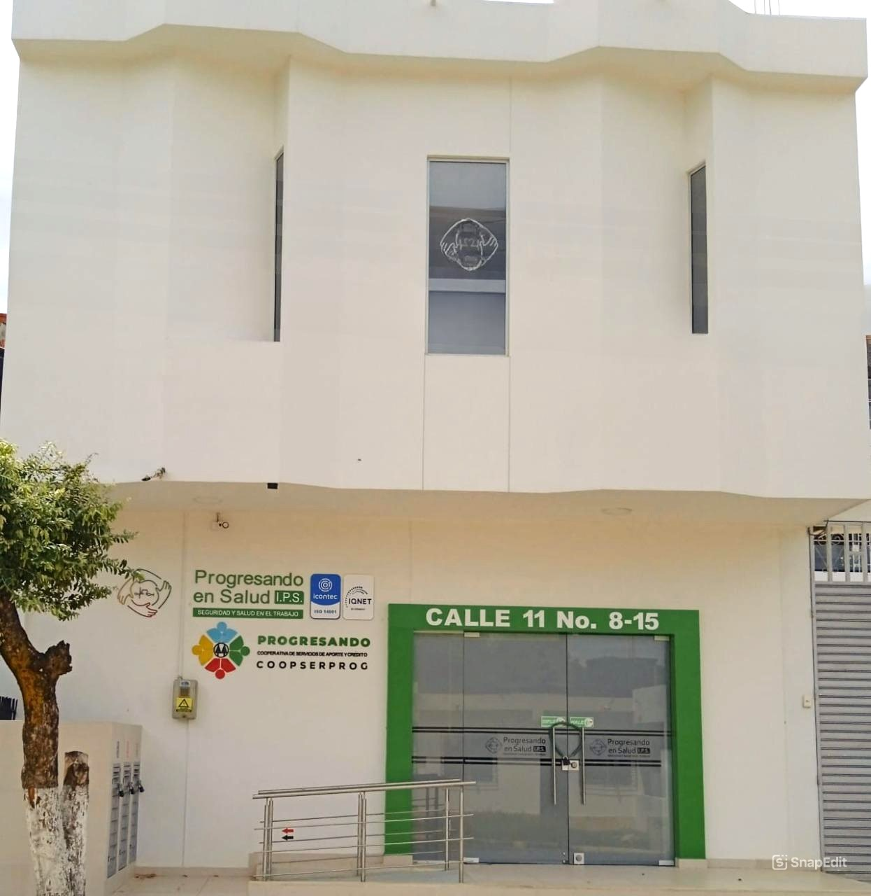
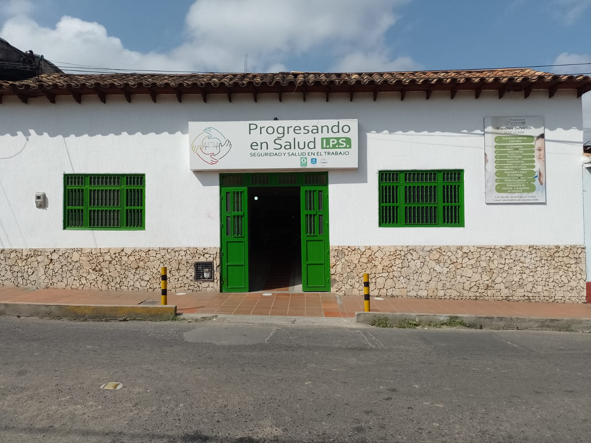

Comunicación
Canales de Contacto
Elige el medio que prefieras y comunícate con nosotros
+57 322 8642938
Respuesta inmediata Chatear ahoracooperativacoopserprog@gmail.com
Respuesta en 24 horas Enviar emailOficina Principal
Calle 21 #0B-75, Barrio Blanco
Cúcuta, Norte de SantanderHorario de Atención
Lun-Vie: 6am - 12pm / 2pm - 5pm
Sáb: 6am - 12pm
Domingos y festivos cerrado Disponible
Ubicación
Nuestras Sedes
Encuéntranos en cualquiera de nuestras oficinas
Principal
Cúcuta
Calle 21 #0B-75, Barrio Blanco

NorteVilla del Rosario
Calle 11 #8-15, Barrio La Palmita

SurOcaña
Calle 11 #24-65 Barrio Las Llanadas
Ubicación
Encuéntranos en el Mapa
Selecciona una sede para ver su ubicación
Selecciona una sede para ver su ubicación
Haz clic en "Ver ubicación" en cualquiera de nuestras sedes